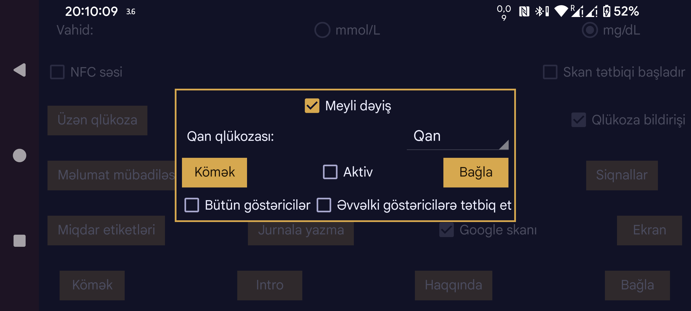

ar az de es fa hi it ja ko nl ru uk uz en
Juggluco 10.0.0 və sonrakı versiyalarda sensor göstəricilərini kalibrləmək mümkündür.
Qan qlükozası: Barmaqdan qan götürülərək aparılan qlükoza ölçmələri üçün istifadə etdiyiniz etiketi seçin. Həmin etiketlə daxil etdiyiniz bütün qan qlükozası göstəriciləri kalibrləməyə daxil ediləcək. İstisna: ortanın solundakı menyu → Yeni miqdar bölməsində İstisna et işarəsi ilə saxlanmış ölçmələr. Qlükozanın dəyişmə sürətinin mütləq qiyməti həddindən artıq böyük olduqda barmaqdan ölçülmüş göstərici avtomatik olaraq kalibrləmədən çıxarılır.
Yalnız qlükoza səviyyəsinin sabit olmaması səbəbindən kalibrləmə üçün uyğun olmayan ölçmələri istisna edin. Sensorun kalibrləməyə ehtiyacı olmadığını düşünsəniz belə, digər ölçmələri saxlayın. Kalibrləmə tətbiq edilməsini istəmirsinizsə, Aktiv seçimini söndürün; ortanın sağındakı menyuda Axın, Skanlar və Tarixçə qarşısındakı ✓ işarələrini götürüb onların arxasındakı [x] işarələrini aktiv edin. Beləcə, yalnız sensorla uyğun gəlməyənlər deyil, bütün uyğun qan qlükozası ölçmələri kalibrləmənin hesablanmasında iştirak edir.
İstisna edilməmiş hər yeni barmaqdan ölçmə yeni kalibrləmə yaradır. Nəticələrə sensor məlumatları ekranındakı Kalibrləmələr düyməsi ilə baxmaq olar. Sensor məlumatlarını açmaq üçün qlükoza qrafikinə uzun basın və ya sol menyu → Sensor seçin. Kalibrləmələr hər sensora ayrıca aiddir.
Keçmişə tətbiq et: Bu seçim söndürülübsə, hər qlükoza göstəricisinə ondan əvvəl aparılmış ən son kalibrləmə tətbiq olunur. Aktivdirsə, sensorun bütün göstəricilərinə ən son kalibrləmə tətbiq edilir.
Meyli dəyiş: Seçim söndürülübsə, kalibrlənmiş nəticəni almaq üçün sensorun bütün göstəricilərinə sabit bir ədəd əlavə olunur və ya çıxılır. Əlaqə belədir:
Kalibrlənmiş qlükoza = Sensor qlükozası + b
b kalibrləmə əsasında hesablanır. Bu rejimdə yüksək qlükoza göstəricilərinə əsasən kalibrləmə etmək məqsədəuyğun deyil: belə ölçmələrdən tapılan b kiçik qlükoza göstəriciləri üçün həddindən artıq böyük ola bilər. Həm də yüksək və çox yüksək göstəricilər arasındakı fərq nisbətən az əhəmiyyət daşıyır.
Meyli dəyiş aktiv olduqda düstur belədir:
Kalibrlənmiş qlükoza = a × Sensor qlükozası + b
Bu halda a 1-dən fərqli ola bilər. Kalibrləmə ölçmələrinin müxtəlif qlükoza səviyyələrini əhatə etməsi vacibdir. Məsələn, barmaqdan bütün ölçmələr təxminən 90 mg/dL (5 mmol/L) səviyyəsində aparılıb, sensor göstəriciləri isə 54–180 mg/dL (3–10 mmol/L) arasında dəyişirsə, həmin ölçmələr a-nı müəyyənləşdirmək üçün kifayət qədər müxtəlif deyil.
Juggluco ölçmələrə onların yaşından asılı olaraq çəki verir: ən yeni qlükoza göstəricisinin çəkisi 1-dir, köhnə göstəricilərin çəkisi daha azdır. Kalibrləmələrin özləri də zamanla daha az çəki alır: vaxt keçdikcə a 1-ə, b isə 0-a yaxınlaşır.
Kalibrləmənin ümumi təsiri istifadə olunan qan qlükozası ölçmələrinin ümumi çəkisindən asılıdır. Daha çox, xüsusilə yeni ölçmələr olduqda kalibrlənmiş göstəricilər bu ölçmələrlə CGM göstəriciləri arasında hesablanan ən uyğun xətti əlaqəyə daha çox yaxınlaşdırılır.
Tarixçə göstəriciləri yalnız keçmiş dövrlər üçün mövcuddur. Buna görə barmaqdan ölçmə aparılan anda ona uyğun Tarixçə göstəricisi hələ yoxdur. Libre sensorlarında Tarixçə göstəricilərinin kalibrlənməsi 21 dəqiqə, CareSens Air sensorlarında isə 31 dəqiqə sonra icra olunmaq üçün proqramlaşdırılıb, lakin faktiki icra daha gec də baş verə bilər. Sonrakı CGM göstəricilərindən də istifadə etmək üçün Axının kalibrlənməsi də sonradan təkrarlanır.
Aktiv: Seçim aktivdirsə, kalibrlənmiş göstəricilər siqnallarda, yayımlarda, Health Connect-də, Juggluco-nun Nightscout/xDrip veb-serverində, saatlara göndərilən göstəricilərdə və Üzən qlükoza pəncərəsində istifadə edilir. Juggluco-nun sağ tərəfində kalibrlənmiş göstərici böyük, kalibrlənməmiş göstərici isə onun yanında kiçik şriftlə göstərilir. LibreView-ə göndərilən məlumatlarda kalibrlənmiş göstəricilər heç vaxt istifadə olunmur.
Kalibrlənmiş əyriləri ortanın sağındakı menyuda Axın və Tarixçə sözlərinin qarşısındakı ✓/- işarələri ilə, ilkin (kalibrlənməmiş) əyriləri isə həmin sözlərdən sonrakı işarələmə xanaları ilə göstərib-gizlədə bilərsiniz.
Bütün göstəricilər: Bəzi ölçmələrin kalibrlənmiş qarşılığı yoxdur. Bu seçim söndürülübsə, kalibrlənmiş əyridə həmin nöqtələr göstərilmir. Aktivdirsə, onların yerinə kalibrlənməmiş göstəricilər göstərilir. Beləliklə, ortanın sağındakı menyuda Axının ilkin göstəricilərini söndürdükdə belə bütün nöqtələri görə bilərsiniz.